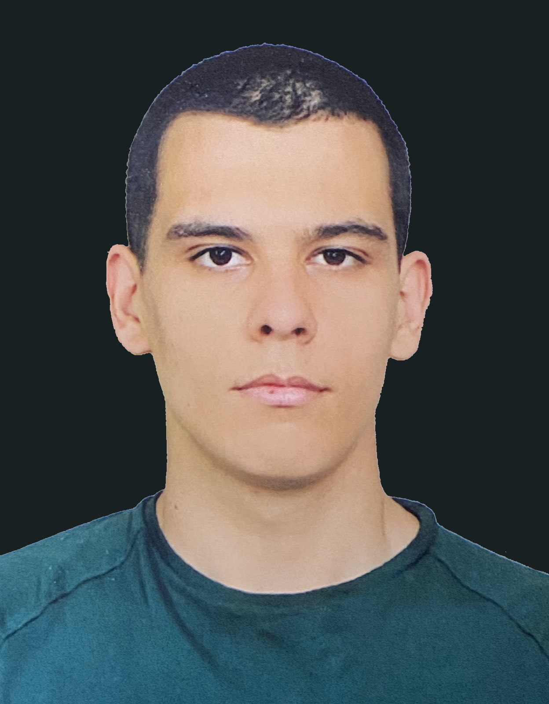

Welcome, let me briefly introduce myself !

Name: Ivelin Ivanov
Age: 22
Born in: Plovdiv,Bulgaria
Lives in: Plovdiv, Bulgaria/Southampton, UK
Occupation: Full-time Student/Full-time Senior Operations Specialist
Hobbies:Computer Systems(Hardware/Software), NFTs, Cryptocurrencies and more
Welcome, the point of this website is to show-off my web development skills and introduce myself. My name is Ivelin, Im currently at my final year of studying Cyber Security Management at Solent University in Southampton. I moved to the UK in 2016, in 2017 I started my first year of College, where I studied IT and graduated with D*D*. I've always been interested in learning about new technologies, tinkering and messing with computers (Both hardware and software side)...